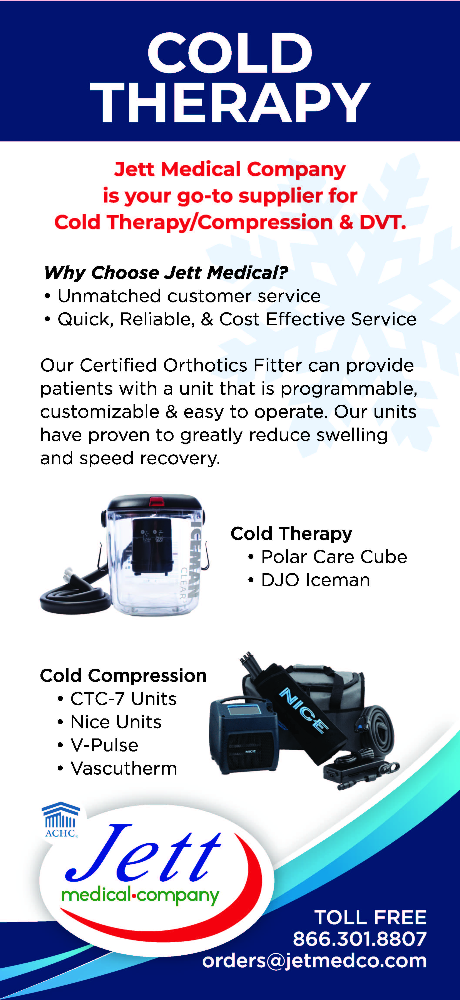

Cold therapy, also known as cryotherapy, uses cold temperatures to help reduce pain and inflammation. It is commonly used after injuries or surgery to help manage swelling, discomfort, and recovery.
Benefits of Cold Therapy
Cold therapy can provide several benefits, including:
- Reducing pain and swelling
- Decreasing muscle spasms
- Supporting recovery
- Improving comfort during rehabilitation
Cold Therapy We Offer
At Jett Medical, we offer a variety of cold therapy options designed to help patients manage pain and inflammation during recovery. Our cold therapy systems are intended to provide effective and convenient treatment for patients following injuries, procedures, and surgeries.
